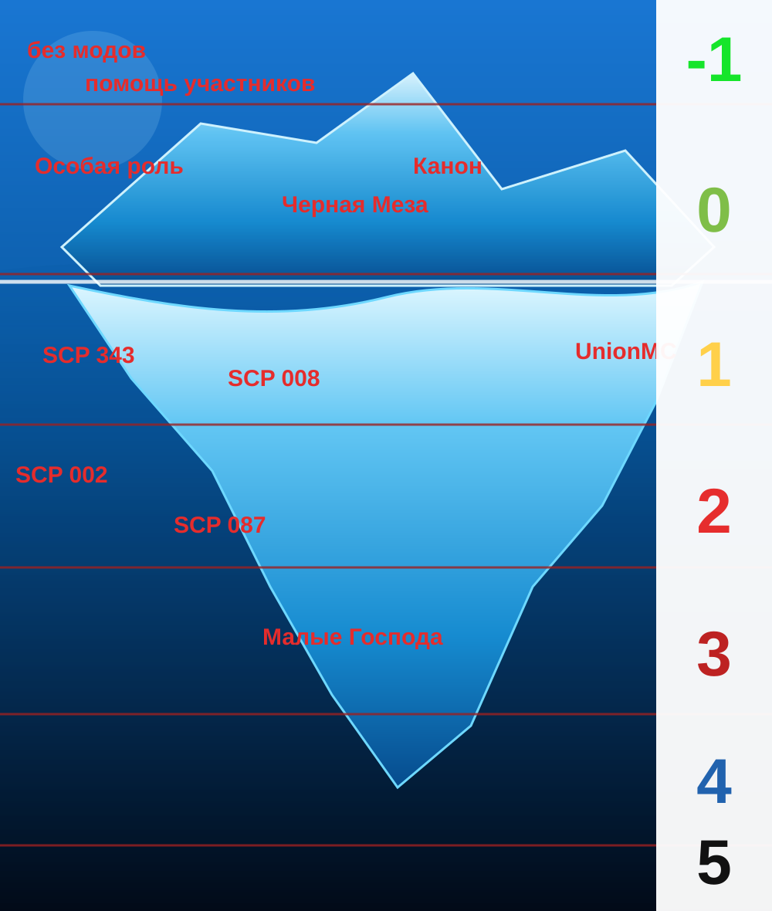

01 // ВЫСШЕЕ РУКОВОДСТВО
Владелец
MrAreot
Добро пожаловать на сервер во вселенной SCP.
Здесь каждый шаг может стать последним.
Скопируй IP и подключайся к SCP Founder.
Текущая иерархия администрации проекта. Если должность не занята, отображается статус «пусто».
MrAreot
Alext
пусто
TablurExpan
megopilimen
пусто
пусто
lich333hallow
Oka
zuki
пусто
пусто
пусто
пусто
пусто
пусто
пусто
пусто
пусто
пусто
Уровни и знания, связанные с проектом.

Добро пожаловать на официальный Discord-сервер проекта SCP FOUNDER.
Находясь на сервере, вы автоматически подтверждаете, что ознакомились с настоящими правилами и обязуетесь соблюдать как их, так и Правила сообщества (Community Guidelines) и Условия использования (Terms of Service) Discord.